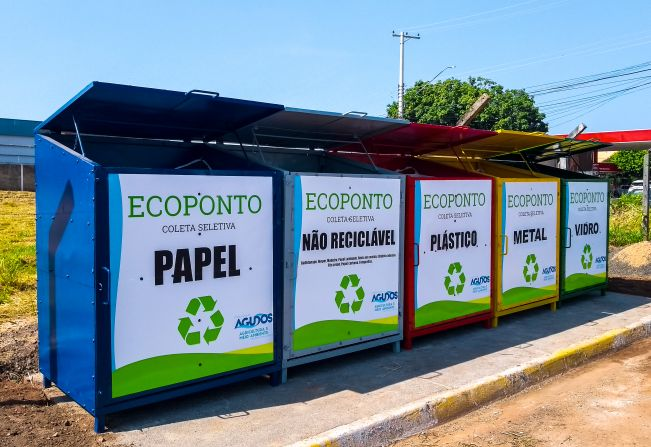

Lixo Eletrônico
Locais de reciclagem
Descarte Adequado de Lixo Eletrônico: Locais Confiáveis e Responsáveis
No mundo moderno, onde a tecnologia avança rapidamente e os dispositivos eletrônicos se tornam obsoletos em um piscar de olhos,
o descarte adequado de lixo eletrônico tornou-se uma preocupação ambiental e de saúde pública cada vez mais importante.
Dispositivos eletrônicos contêm uma variedade de materiais tóxicos e metais pesados que podem poluir o meio ambiente
se não forem descartados corretamente. Felizmente, há uma série de opções disponíveis para o descarte responsável de lixo
eletrônico.
Aqui estão alguns locais onde você pode descartar seu lixo eletrônico de forma segura e ética:
Pontos de Coleta de Lixo Eletrônico: Muitas comunidades e municípios oferecem programas de reciclagem de lixo eletrônico,
onde os residentes podem entregar seus dispositivos eletrônicos obsoletos para reciclagem. Esses pontos de coleta geralmente
são organizados por autoridades locais, empresas de reciclagem ou organizações sem fins lucrativos.
Lojas de Eletrônicos e Fabricantes: Muitas grandes redes de varejo de eletrônicos oferecem programas de reciclagem,
onde você pode devolver dispositivos eletrônicos antigos ou quebrados para reciclagem. Além disso, alguns fabricantes de
eletrônicos têm programas de reciclagem para seus próprios produtos, permitindo que os consumidores devolvam os dispositivos
antigos para reciclagem ou descarte adequado.
Campanhas de Reciclagem Específicas: De tempos em tempos, várias organizações e empresas realizam campanhas de
reciclagem de lixo eletrônico, onde oferecem pontos de coleta temporários em locais específicos, como estacionamentos
de supermercados, centros comunitários ou escolas. Essas campanhas são uma ótima oportunidade para descartar seu lixo
eletrônico de forma responsável, especialmente se não houver pontos de coleta permanentes em sua área.
Programas de Reciclagem de Celulares: Muitas operadoras de telefonia móvel e fabricantes de smartphones oferecem
programas de reciclagem de celulares. Esses programas permitem que você devolva seu celular antigo para reciclagem, muitas
vezes em troca de descontos em novos dispositivos ou créditos em conta.
Organizações de Caridade: Algumas organizações de caridade aceitam doações de dispositivos eletrônicos usados,
desde que ainda estejam em condições de funcionamento. Esses dispositivos podem ser restaurados e revendidos para angariar
fundos para a organização ou doados para pessoas necessitadas.
É importante ressaltar que, ao descartar seu lixo eletrônico, você deve tomar medidas para proteger seus dados pessoais.
Certifique-se de fazer o backup e excluir todas as informações pessoais e confidenciais de seus dispositivos antes de entregá-los
para reciclagem ou doação. Ao escolher um local para descartar seu lixo eletrônico, opte por locais confiáveis que sigam práticas
ambientalmente responsáveis e éticas de reciclagem. Dessa forma, você estará contribuindo para a preservação do meio ambiente e
para a saúde da comunidade.
